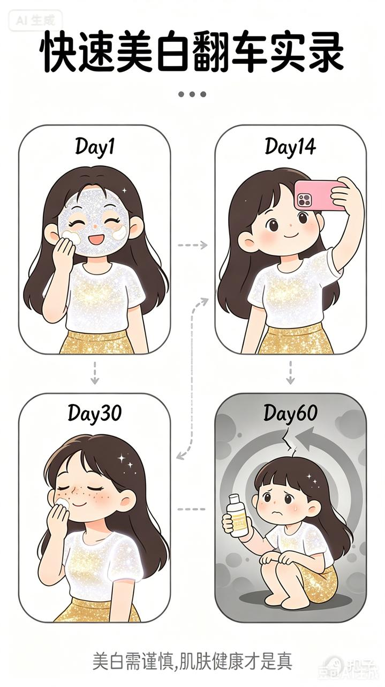
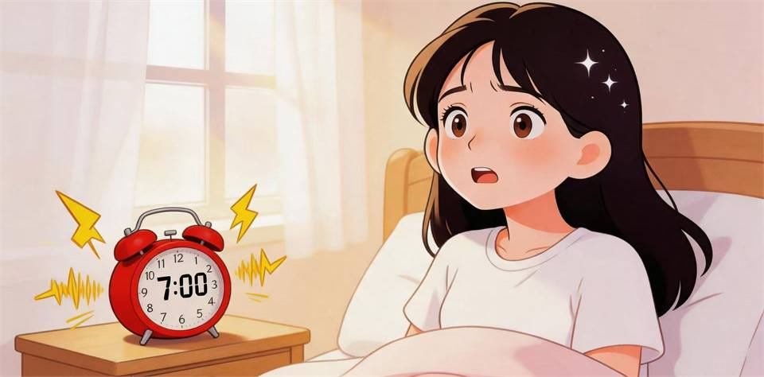
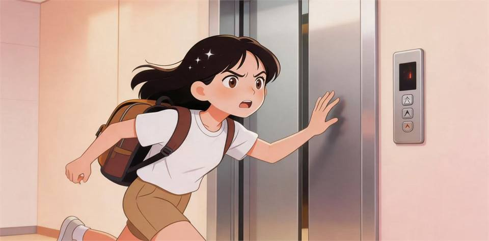
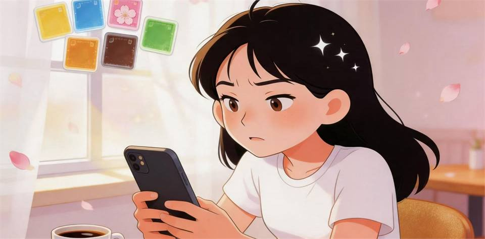
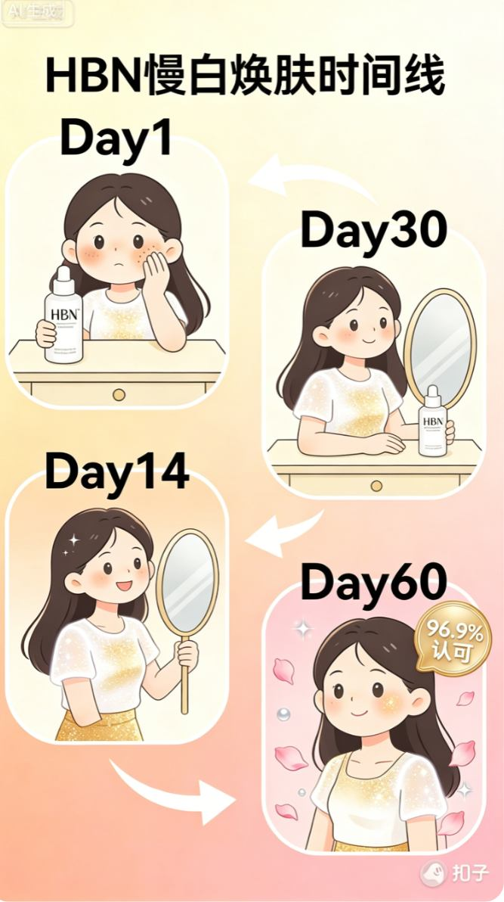
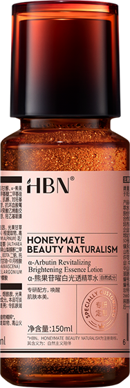
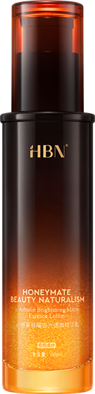

时间线A「快的白」
- Day1速白产品，立刻发光
- Day14超白！拍照超好看
- Day30反黑了，比之前更暗
- Day60又换一瓶，继续循环
0%
慢光阴正在展开


SLOW LIGHT STORY
你的白，值得等。
长按或点击圆环，进度到 100% 后进入下一页
TWO TIMELINES
拖动下方滑杆，选择进入“快的白”或“慢的白”。一边反复亮暗循环，一边像花一样稳稳变好。


拖动滑杆，左右切换“快白”和“慢白”
HBN SLOW SCIENCE
在国际权威机构和三甲医院临床进行人体功效实测，远超行业与国标常规验证标准。
点击花瓣或任务点，集齐 4 个慢科研数据


MY SLOW MOMENT
选择或写下一个瞬间，生成你的专属慢光阴宣言。
点击一个场景，下面卡片会换成对应图片
慢光阴卡片
SLOW CHALLENGE
手指沿着圆环慢慢走。越慢，画面越亮，最后绽放成光透焕白圆环。
按住圆环边缘移动，尽量画完整一圈
点击生成海报后，长按图片即可保存分享
HBN · 让真功效名副其实